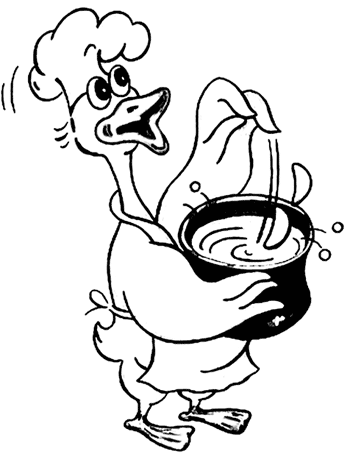

Первые блюда
 Бульон из птицы
Бульон из птицы
Мясо и кости птицы разрезать на небольшие куски, залить холодной водой и варить. Когда вода закипит, пену снять, положить очищенные, нарезанные и поджаренные коренья, пряности и варить на слабом огне в открытой кастрюле. Когда мясо сварится, его следует вынуть, а бульон процедить.
Из этого бульона можно приготовить заправленные сметаной супы, супы-пюре и другие.
Состав: птица — 600 г, петрушка — 1 корень, лук — 1 шт., морковь — 1 шт., сельдерей — 1 корень, душистый перец — 10 горошин, вода — 3 л, соль.
РассольникРассольник можно приготовить на мясном или курином бульоне и подавать с телятиной, бараниной, курицей. Вместо почек можно использовать потроха курицы, гуся, утки, индейки, тщательно очищенные и нарезанные на части. Рассольник можно приготовить и на рыбном бульоне и подавать с куском отварного судака или осетрины.
С почек снять жир и пленки, разрезать каждую на 2–4 части, промыть, положить в кастрюлю, залить холодной водой и вскипятить. Потом воду слить, почки еще раз промыть, вновь залить холодной водой и поставить варить на 1–1,5 часа. Очищенные коренья нашинковать соломкой и поджарить на масле в суповой кастрюле. После этого кастрюлю снять с огня, положить в нее очищенные и нарезанные ломтиками соленые огурцы и картофель, нарезанный брусочками, залить процеженным бульоном и на 20–30 минут поставить варить. За 5—10 минут до окончания варки в рассольник добавить для остроты процеженный огуречный рассол, соль, щавель. Добавить сметану или сливки и мелко нарезанную зелень петрушки и укропа.
Состав: почки — 70 г или потроха —130 г, картофель — 150 г, зелень, щавель — 40 г, репчатый лук — 20 г, соленые огурцы — 30 г, топленое масло — 10 г, сметана или сливки — 10 г, соль по вкусу.
Рассольник московскийПочки предварительно замочить в холодной воде, довести до кипения и проварить в течение 10 минут. Затем слить воду, промыть почки в холодной воде и вновь варить до готовности. Вместо почек можно использовать курицу либо ее субпродукты. Бульон процедить и использовать для приготовления рассольника. Пошинковать соломкой коренья и лук, лук и морковь запассеровать.
Поместить в кипящий бульон овощи, припущенные огурцы. Варить 10 минут. Добавить нарезанные листья щавеля или шпината, специи, соль, огуречный рассол и варить до готовности. Можно готовить рассольник и без щавеля и шпината.
При подаче на стол в рассольник положить кусочки вареной курицы или вареные почки, заправить льезоном, посыпать зеленью. Можно отдельно подать ватрушки с творогом.
Состав: курица —100 г или говяжьи почки — 80 г, петрушка (корень) — 90 г, пастернак (корень) — 60 г, сельдерей (корень) — 30 г, репчатый лук — 40 г, лук-порей — 40 г, морковь — 40 г, щавель — 40 г, шпинат — 40 г, соленые огурцы — 60 г, сливочное масло — 20 г, бульон или вода — 700 г, рассол, соль, специи; для льезона: сливки или молоко —150 г, яйцо — 0,5 шт.
Рассольник из гусиных потроховГусиные потроха хорошенько промыть, пупок разрезать, вычистить и снять внутреннюю кожу; все уварить с кореньями и пряностями до мягкости, с прибавлением свежей капусты и картофеля до готовности. Добавить огурцы, нарезанные ромбиками и припущенные в рассоле. Мясо порубить на кусочки, а бульон подправить мукой.
Состав: гусиные потроха из 2 тушек, свежая капуста — 0,25 кочана, картофель — 5 шт., мука — 1 ст. ложка, огурцы — 4–5 шт., по 1 штуке разных кореньев, немного пряностей.
Суп «царский»Распустить в мясном холодном бульоне картофельную муку и хорошенько размешать до консистенции сметаны, эту смесь прибавить небольшими частями к кипящему чистому мясному бульону, постоянно и энергично помешивая.
В другую кастрюлю положить на каждого обедающего по столовой ложке пюре, приготовленного следующим образом: очищенные трюфели поджарить в масле с небольшим количеством лука, но не давать им зарумяниться, прибавить еще немного лука и протереть через решето. Трюфели, а так же морковь, репу, брюкву и другие овощи, можно томить в закрытом сосуде с небольшим количеством соленой воды; когда масса сделается мягкой, то ее еще в горячем виде протереть через решето. Поместить в кастрюлю пюре, хорошо размешать, развести бульоном, прибавить сливки.
Перед самым обедом опустить в бульон поджаренное в масле и тонко нарезанное куриное филе, в виде небольших кусочков, рубленые шампиньоны, трюфели и кнель.
Состав: курица — 1 шт., говядина — 800 г, картофельная мука — 5 ч. ложек, пюре — 5 ст. ложек, сливки — 1 стакан, кнель, шампиньоны — 5 шт., трюфели — 2 шт.; для пюре: трюфели — 400 г, сливочное масло —100 г.
Суп «королевский»Приготовить бульон из 1,1 кг говядины, 400 г телятины, оставшихся костей от дичи, кореньев и процедить. Филе от 2 рябчиков поджарить в 100 г масла, истолочь в ступке, развести бульоном и протереть через решето. Отдельно приготовить из 25 каштанов пюре: очищенные от кожицы каштаны отварить в воде или молоке до мягкости и протереть через металлическое решето еще горячими, пока они мягки. Затем все вместе смешать, при подаче прибавить стакан мадеры или половину бутылки шампанского. К этому бульону подать волованы.
Приготовление волованов. Нарезать из слоеного теста кружки, сложить по 3 кружка вместе, смазать яйцом только края, а середину не трогать, проколоть в нескольких местах, где смазано яйцом, чтобы кружки лучше прилипли друг к другу, и запечь. Когда они будут готовы, из середины вынуть мякоть, оставив только последний нижний слой нетронутым, и положить в него какой-либо фарш из дичи.
Приготовление слоеного теста. Соль и кислоту растворить в воде (взять три четверти общего количества воды, полагающейся по норме), добавить яйца, затем муку и замесить тесто, постепенно вливая оставшуюся воду; тесто должно быть однородным. Замешанное тесто оставить на столе на 30 минут для набухания клейковины, за это время сделать одну его обминку.
Маргарин перед закаткой в тесто размягчить до исчезновения комков, а затем смешать с мукой (8—10 % от нормы) и сформовать в прямоугольные пласты.
Выстоявшее тесто раскатать в виде небольшого прямоугольника так, чтобы края были немного толще, чем середина. На середину теста положить кусок маргарина и завернуть раскатанный пласт в виде конверта. Приготовленный кусок теста с маргарином раскатать на столе, посыпанном мукой. Раскатывать тесто следует толстой скалкой во все стороны до толщины 1–1,5 см, причем края его должны быть толще, чем середина. С пласта смести муку и завернуть края теста так, чтобы они соединились в центре, затем сложить пополам, образуя четыре слоя теста. Раскатанное тесто поставить в прохладное место (холодильник) на 15–20 минут, накрыв противнем или влажной салфеткой, чтобы поверхность теста не покрылась корочкой. Охлажденное тесто вновь раскатать, сложить вчетверо и опять охладить не менее 30 минут, затем раскатать в последний раз и сложить втрое. Через 35–40 минут можно приступать к разделке.
Состав: рябчики — 2 шт., говядина —1,1 кг, телятина — 400 г, разные коренья — по 1 шт., сливочное масло — 100 г, каштаны — 25 шт., мадера — 1 стакан, волованы; для теста: мука — 400 г, масло — 400 г, вода — 1 стакан, яйца, маргарин, соль, лимонная кислота.
Суп «Жульен»Приготовить бульон из 1 тетерки или 2 рябчиков и 600 г говядины (который можно подсветить ржаными сухарями), и уже после этого добавить отваренные и шинкованные коренья и перед самой подачей к обеду прибавить кнель и 2 рюмки мадеры.
Приготовление кнели. Филе курицы сначала разрубить как можно мельче, а потом растолочь в деревянной ступе, прибавить размоченный в сливках хлеб, и все опять хорошо растолочь, а после протереть через решето. Перед подачей на стол супа взять эту кнель ложкой, смоченной в горячей воде, разровнять мокрым ножом и положить на вымазанный маслом сотейник. Кнели можно делать фигурчатые. Минут за 10 до подачи сотейник этот залить кипящим бульоном, стараясь не попасть на кнель, поставить на плиту, но не доводить до кипения. Через 3–5 минут кнели осторожно перевернуть, дать еще постоять на плите минут 5, с помощью дуршлага выложить кнели в миску с супом и подать на стол.
Отдельно подать какие-либо пирожки, но предпочтительно блинчатые.
Состав: тетерка — 1 шт. или рябчики — 2 шт., говядина — 600 г, черные сухари — 100 г, мадера — 2 рюмки; для кнели: мясо курицы — 400 г, сливки — 1 стакан, белый хлеб — 200 г, сливочное масло —100 г, яйца — 4 шт.
Грибной суп из опят на курином бульонеГрибы очистить, мелко нарезать и поджарить на масле в глубокой сковороде. Куриный бульон довести до кипения и отварить в нем вермишель. Минут через 10 положить в бульон поджаренные грибы, добавить по вкусу соль и перец.
Состав: грибы — 300 г, куриный бульон — 1,5 л, сливочное масло — 20 г, вермишель — 2-З ст. ложки, соль, черный молотый перец.
Суп из курицы с грибамиСварить курицу в слабо подсоленной воде. В бульон положить 250 г промытых и нарезанных соломкой сушеных грибов. Доведя грибы до мягкости, добавить вермишель, мелко нарезанные потроха. За несколько минут до окончания варки положить щепотку измельченных сушеных листьев лимона.
Состав: курица — 1 шт., сушеные грибы — 250 г, вермишель — 50 г, потроха курицы, цедра лимона — 1 щепоть.
Черный куриный супГорошек отварить до мягкости в курином бульоне, затем протереть вместе с бульоном через сито. Обсушенный горох оставить на ночь. Мелко нарубленный лук обжарить на сливочном масле. Яблоко очистить, удалить сердцевину, мелко нарезать, а затем потушить все вместе. Добавить кэрри, уменьшить огонь и дать покипеть 3–4 минуты. Блюдо посыпать мукой, приготовить светлую подливу и залить мясным бульоном. Добавить пассированный горошек. Поставить на 10 минут прокипеть, затем добавить соль и перец. В готовый суп добавить небольшое количество целых зеленых горошин, сливки или взбитые сливки.
Состав: крепкий куриный бульон — 0,5 л, лук — 2 шт., сливочное масло — 3 ст. ложки, небольшое яблоко — 1 шт., порошок кэрри — 1 ч. ложка, мука — 1–2 ст. ложки, зеленый горошек — 150 г, соль, перец, сливки — 1–2 ст. ложки.
Куриный суп с лапшойКуриное мясо промыть, залить холодной водой и варить на небольшом огне. Через полчаса после начала варки: уменьшить огонь до минимума, добавить нарезанный кубиками картофель, соль, перец и варить до полуготовности курицы. Затем всыпать нарезанные соломкой коренья и доварить суп до готовности. Выключить огонь, вынуть куриное мясо из супа после охлаждения нарезать небольшими кубиками. Бульон процедить через дуршлаг, поставить вновь на огонь и после закипания всыпать лапшу. Когда лапша будет готова, добавить зеленый горошек и куриное мясо. Посолить и снять с огня, положить мелко нарезанную зелень петрушки.
Состав: курица — 1 шт., петрушка, морковь, сельдерей — по 1 корню, лук — 1 шт., лапша —100 г, консервированный горошек — 2–3 ст. ложки, черный перец — 2 горошка, зелень петрушки, картофель — 100 г, соль, бульон.
Лапша домашняя с курицейПока варится бульон, приготовить домашнюю лапшу: муку высыпать горкой на доску, на вершине сделать углубление, выбить туда яйца, посолить, подлить небольшими порциями воду и замесить крутое пресное тесто. Раскатать его тонко, примерно 1,5–2 мм, нарезать на полоски шириной 3,5–4 см и эти полоски нарезать соломкой.
Целые коренья нарезать тоже соломкой и обжарить их на масле. Когда приготовленная лапша просохнет, в кипящий бульон заложить обжаренные овощи, довести до кипения, запустить лапшу, предварительно ошпаренную кипятком (для прозрачности супа), и варить 10–15 минут. При подаче в тарелку положить кусок вареной курицы и залить ее супом, посыпать мелко нарезанной зеленью. Лавровый лист не класть, чтобы не перебить аромат куриного бульона.
Состав: курица — 500 г, морковь —125 г, петрушка, репчатый лук — 100 г, жир — 25 г, лапша — 300 г; для лапши: мука — 250 г, яйца — 2 шт., вода — 50 г, соль.
Суп из жирной курицыКурицу промыть, разрезать на небольшие куски, сварить в соленой воде без овощей до полуготовности. Затем мясо вынуть и с поверхности бульона снять жир. Бульон процедить через сито или дуршлаг, всыпать рис или вермишель. Мясо снова опустить в бульон, добавить все овощи и довести до готовности. Варить еще 15 минут.
Из куриного мяса можно приготовить второе блюдо. Можно также нарезать его небольшими кусочками и положить в суп.
Состав: курица — 0,5 шт., лук — 0,5 шт., сельдерей — 1 корень, петрушка — 1 корень, морковь — 1 шт., рис или вермишель — 3–4 ст. ложки, соль.
Куриный суп с молодым лукомНарезать лук тонкими кружками. Зелень измельчить. Лук обжарить на масле, залить готовым куриным бульоном и варить 5 минут. Яйца взбить в чашке и влить в кипящий суп. Добавить зелень лука, соль и снять с огня. Хлеб нарезать кубиками, обжарить на сковороде в масле. Суп разлить в тарелки, насыпать сверху гренки и тертый сыр.
Состав: молодой репчатый лук с перьями — 150 г, сливочное масло — 50 г, куриный бульон — 1 л, яйца — 2 шт., белый хлеб — 8 ломтиков, тертый твердый сыр — 4 ст. ложки, немного масла для обжаривания хлеба, соль.

Острый суп из курицы
Подготовленную тушку курицы залить холодной водой и проварить 1–2 часа до готовности, периодически снимая пену и жир. Готовую курицу вынуть из бульона и посыпать солью. На снятом с бульона жире запассеровать мелко нарезанный лук репчатый, в конце пассерования всыпать муку и, перемешивая, продолжать пассерование еще 2–3 минуты. Затем развести частью бульона, довести до кипения, постепенно вливая остальной бульон. Добавить перец, зелень кинзы (кориандр), лимонную кислоту, соль и варить в течение 15 минут. Снять с огня и вынуть веточки зелени. Затем в суп при постоянном помешивании влить яичные желтки, разведенные небольшим количеством бульона. Снова довести до кипения, но не кипятить, и снять с огня. Довести до вкуса, добавляя лимонную кислоту, настой шафрана. При подаче в супницу положить куски курицы, налить суп, посыпать зеленью петрушки (кинзы или укропа).
Состав: курица — 300 г, лук — 80 г, мука пшеничная — 10 г, шафран — 0,1 г, яйца (желток) — 2 шт., зелень — 20 г, лимонная кислота (винный уксус) — 20 г, соль, специи, вода — 800 г.
Суп с пассерованной курицейКоренья и лук-порей нарезать соломкой и слегка запассеровать.
Приготовление омлета. Яйца, молоко, соль хорошо перемешать и процедить, затем разлить в формы или на противень, смазанный сливочным маслом, и варить на водяной бане при температуре не выше 85 °C Готовый омлет нарезать соломкой. В куриный бульон добавить лимонную кислоту, пассерованные овощи, зеленый горошек, порционные куски отварной курицы, нарезанный омлет и дать прокипеть 2–3 минуты.
Состав: курица — 300 г, морковь — 100 г, лук-порей — 60 г, сельдерей (корень) — 60 г, столовый маргарин — 40 г, готовый натуральный омлет — 200 г, консервированный зеленый горошек — 80 г, лимонная кислота, вода — 1,5 л; для омлета: яйцо — 1 шт., молоко —100 г, сливочное масло — 5 г, соль.
Суп из потрохов дичиПотроха любой дичи отварить до мягкости в 1,25 л слегка посоленной воды. В конце варки добавить очищенную, мелко нарубленную зелень. Укроп и петрушку мелко порубить и посыпать ими суп. Подать в горячем виде к столу.
Состав: потроха — 1 набор, зелень для супа — 1 пучок, укроп и петрушка — 1 ст. ложка.
Суп картофельный с субпродуктами птицыПодготовленные куриные субпродукты — шейки, желудки, сердца, крылышки — отварить (печенку отварить отдельно). Затем все это вынуть, бульон процедить, снять жир и довести до кипения. Заложить подготовленное (ошпаренное) пшено, пассерованные коренья и лук и варить 30 минут. За 15 минут до окончания варки добавить картофель, нарезанный кубиками, и специи.
При подаче в тарелку положить нарезанные и подогретые в бульоне субпродукты вместе с печенкой.
Состав: субпродукты птицы — 190 г, картофель — 250 г, пшено — 30 г, петрушка (корень) —10 г, репчатый лук — 20 г, лук-порей — 20 г.
Суп из куриных потрохов с грибамиПотроха залить водой и варить до готовности. Грибы поджарить на сале, незадолго до готовности добавить к ним мелко нарезанные лук, морковь и петрушку. Затем добавить туда красный перец, мелко нарезанную зелень и положить в бульон с потрохами. Перед подачей на стол заправить сметаной.
Состав: свежие грибы — 100 г, потроха двух кур, морковь — 2 шт., петрушка — 2 корня, лук — 1 шт., сметана —100 г, сало — 20 г, зелень петрушки, красный перец, соль.